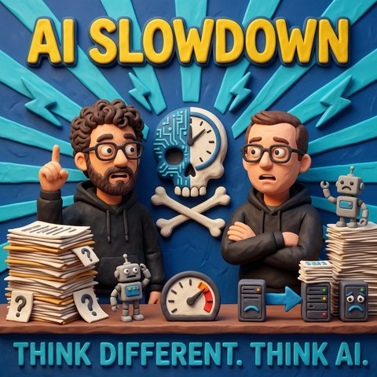

AI SlowDown
Auf Deutsch lesenTopics RobotikModelle und Anbieter
What it is about
Sam Altmans Rückzieher, unzensierte Modelle auf dem eigenen Rechner und die Frage, wofür ein Staat noch Bürger braucht
Keine Gäste, dafür zwei Hosts mit reichlich Redebedarf. Der Anlass ist ein Interview, das Sam Altman am Aufnahmetag gegeben hat. Darin räumt der OpenAI-Chef ein, dass seine Prognosen aus der Zeit nach GPT-4 zu schnell waren. Der Umbau der Arbeitswelt kommt später als angekündigt. Bemerkenswert ist die Begründung: Schuld sind demnach nicht die Labore, sondern Gesellschaft und Wirtschaft, die sich zu langsam bewegen und zu statisch sind. Im selben Atemzug findet Altman die Verzögerung auch gut, weil Regierungen so mehr Zeit für Regulierung und Fragen wie das bedingungslose Grundeinkommen bekommen.
Jens liest das anders. Wenn die Welt die vorhandenen Modelle ohnehin nicht schnell genug in Arbeitsweisen übersetzt, bringt es kein Geld, weitere hinterherzuschieben. Der Rückzieher wäre dann weniger Einsicht als Erwartungsmanagement Richtung Investoren, verpackt als Verantwortungsbewusstsein. Mark steuert eine Beobachtung aus der Smartphone-Welt bei: Beeindruckende Funktionen erscheinen, und drei, vier Jahre später laufen dieselben Menschen mit denselben Geräten herum. Aufmerksamkeit erzeugen neue Emojis. Genau deshalb sind Hersteller dazu übergegangen, wichtige Sicherheitsupdates gemeinsam mit Emoji-Erweiterungen auszuliefern.
Aus dieser Beobachtung wird die größere Frage der Folge. Jens hat einen Text gelesen, der nicht fragt, ob der Einzelne mit dem Wandel mitkommt, sondern wofür ein Staat seine Bürger überhaupt noch braucht, wenn Verwaltung, Wirtschaft und Exekutive weitgehend automatisiert laufen. Die Antwort führt in Gebiete, die nach Science-Fiction klingen und es nicht mehr sind. Bewaffnete Robotik ist im Ukraine-Krieg auf beiden Seiten im Einsatz, Polizeidrohnen sind aus China dokumentiert, und die Bewertung des Roboterherstellers Unitree hat gerade neue Höhen erreicht. Mark warnt davor, dabei nur an humanoide Formen zu denken: Die Evolution hat für unterschiedliche Aufgaben unterschiedliche Körper hervorgebracht, und die Fabrik wird auch künftig den Roboterarm behalten statt eines Humanoiden mit Schweißgerät.
Dazu kommen Fragen, die sich schlecht wegdelegieren lassen. Das bekannte Gedankenspiel zum autonomen Fahren bekommt eine neue Schärfe, wenn ein System die Social-Media-Profile der Beteiligten in die Abwägung ziehen könnte. In chinesischen Kinderzimmern stehen nach den Zahlen der Folge rund 20 Millionen Gadgets mit KI, und Kinder bauen Beziehungen zu sprechenden Kuscheltieren auf, deren Stecker irgendwann jemand zieht. Für Mark ist der Einschnitt insgesamt größer als der Buchdruck, mit derselben Doppelnatur: Herausforderung und Chance auf wissenschaftliche Ergebnisse, mit denen zu Lebzeiten niemand gerechnet hätte.
Im zweiten Teil wird es konkret. Dass die Entwicklung sich verlangsamt, hält Mark für unwahrscheinlich, und der Grund heißt China. Auf ein Modell, das über ein Terabyte Videospeicher verlangt, folgte kurz darauf ein offenes Modell, das auf gut ausgestatteter Endanwender-Hardware läuft und in Teilen an das Niveau der großen Anbieter heranreicht. Wer so etwas lokal betreiben kann, braucht die teuren Abos nicht mehr zwingend. Aus dieser Lage folgt eine Komplexität, die IT-Abteilungen für Jahre beschäftigen wird: lokale und entfernte Modelle, Router, Agenten, die Frage, wann ein kleiner Workflow, der einen Tag laufen darf, besser ist als eine Antwort in Echtzeit.
Zwei Beobachtungen aus der eigenen Praxis zeigen, wohin das führt. Mark saß am Wochenende an einem Projekt, als die Lüfter des Rechners hochdrehten. Codex hatte von sich aus das lokal installierte Ollama gestartet, ein fremdes Modell um eine zweite Meinung gebeten und darüber den Fehler gefunden. Ähnlich in seinem eigenen Aufbau: Nicht er hat entschieden, mehrere kleinere Modelle nebeneinander zu laden statt eines großen, sondern das System selbst, mit der Begründung, unterschiedlich trainierte Modelle liefen nicht in dieselben Fallen. Bei Anthropic lassen sich inzwischen Terminal-Fenster verschränken, sodass ein Fenster als Orchestrator die anderen steuert. Jens hält dagegen, dass daran nichts unheimlich sei, unheimlich sei eher, dass diese Anwendungen so lange nicht miteinander geredet haben. Sein eigentlicher Einwand gilt den Oberflächen: Modellauswahlen, die zwischen schnell, schneller und noch schneller unterscheiden oder zwischen intelligent und intelligenter, helfen niemandem bei der Entscheidung.
Der unangenehmste Teil kommt zum Schluss. Von einem offenen Modell mit 27 Milliarden Parametern kursiert eine Fassung, der die Sicherheitsschranken abtrainiert wurden. In Sicherheitstests, in denen übliche Modelle 98 bis 99 Prozent der kritischen Anfragen abweisen, verweigert diese Fassung 2,7 Prozent. Veröffentlicht mit dem Hinweis, sie sei ausschließlich für Forschung gedacht, und mit der Feststellung, sie eigne sich hervorragend für Missbrauch. Dazu ein Videogenerator, der ohne Rücksicht auf Urheberrechte erzeugt und auf gewöhnlicher Hardware läuft. Marks Punkt ist nicht die Existenz solcher Modelle, sondern die Leichtigkeit des Zugriffs: Zwei Programmnamen und eine Suche genügen, und was vor einem halben Jahr Behörden und Konzerne beschäftigt hat, liegt auf dem eigenen Rechner.
Jens widerspricht Sam Altman an genau dieser Stelle. Ausbremsen hilft nicht, weil der Wettlauf sich nicht bremsen lässt: nicht durch Exportbeschränkungen für Chips, nicht durch Absprachen, und schon gar nicht durch Einsicht. Die Gesellschaft müsse im Gegenteil Tempo aufnehmen und ihre Systeme widerstandsfähig machen, und auch das werde nur mit KI gehen. Zum Abschluss noch eine offene Frage: Bei OpenRouter ist ein Modell ohne bekannten Hersteller aufgetaucht, das Aufgaben löst, an denen die großen scheitern, mit einer Million Token Kontext und auffällig günstigen Preisen. Bezahlt wird mit den eigenen Eingaben, das steht in den Bedingungen. Wer dahintersteckt, weiß zum Zeitpunkt der Aufnahme niemand.
Transcript
00:00:00Welcome to Think Different. Think AI., the podcast by Mark and Jens.
00:00:07Two minds in love with technology, who don't just talk about artificial intelligence, they live it.
00:00:14Here you get clear judgements, real insights from practice and a fresh look at what is possible.
00:00:20Understandable, critical and always with a wink.
00:00:24AI to think about, to smile at and above all to join in with.
00:00:34A warm welcome to a new episode of Think Different. Think AI.
00:00:41First of all I would like to greet the numerous listeners who came to us from that very short little advert on Mango Blau, greetings go out.
00:00:50Perhaps there are new listeners who do not know what this is about, they are welcome to listen to the Mango Blau podcast.
00:00:58We have a little crossover planned there soon, but that is enough on the subject of announcements.
00:01:03I did not wait until minute 42 to talk about it. I put it right at the beginning.
00:01:09And from that you can already guess, when I start with topics like these, that we have no guest today.
00:01:14But Jens is back. Hello Jens, good to have you here. But as I said, without a guest.
00:01:19Without a guest, but you and me, that is often enough for good episodes, and I think today will be a good one too.
00:01:28With guests it is of course much smaller, but we have a whole range of guests lined up for the coming weeks and months.
00:01:35We have this crossover podcast.
00:01:38Crossover, that does sound a bit cooler.
00:01:40That would mean we take a look at it too.
00:01:43Yes, let us see what we have. But that will be exciting too. We have already had
00:01:49one or two people who make podcasts themselves. But a crossover in this
00:01:53form we have not done so far, that will surely be exciting. So
00:01:56greetings from my side to the colleagues as well. I am already looking forward to both episodes,
00:02:01one with you, one with us. And I am looking forward to it above all because this week is
00:02:07a really interesting week. There is a lot of exciting news again
00:02:12around the topic of AI, and this week, you will hear it only later, for you perhaps in the week before.
00:02:22I do not even know when this episode is going out, it occurs to me right now.
00:02:25Yes, I am still thinking about it.
00:02:26That is already looking pretty hopeless.
00:02:27But I am getting myself tangled up here right now.
00:02:30Yes, I am very unsure myself at the moment.
00:02:32When you are in one week, we are in the other week.
00:02:35This week we are talking about is the week in which Gamescom takes place in Cologne.
00:02:40So that you can place it in time. But Jens, what did you actually want to say?
00:02:45I do not know exactly either. I am still trapped in this point in time.
00:02:48I wanted to say what a factor it is, what has happened.
00:02:50Yes, Gamescom of course, and I want to say something about the others too.
00:02:53First of all, that we will see each other at Gamescom. That was actually the best news.
00:02:56And we will meet at Gamescom. Record another episode there as well,
00:02:59which will then come out at some other point in time.
00:03:01That is basically, when you make podcast episodes,
00:03:04you live in a permanent time-lag problem
00:03:08and have to watch out the whole time that you do not let something slip and change a future
00:03:12that has not even happened yet.
00:03:14Yes, we are not the Spider-Man actor who tells everyone everywhere who is about to die
00:03:19or how it goes on.
00:03:20But I know what you mean, when I walk past various colleagues in the office
00:03:24and they say to me, hey, I listened to the episode and said they
00:03:28found it, let us say, challenging and sometimes also good, and sometimes there is
00:03:33criticism and sometimes praise, and then you first have to work out which
00:03:37episode these people are talking about. Which episode did they listen to? Because there too it is not only the case
00:03:41that they hear the episode when it airs, but sometimes they are one or two
00:03:45episodes behind in their podcast queue. And from that angle, an episode that is current for
00:03:51them may be older than I feared. But at least we still remember it.
00:03:59I would say I could not recite every episode by heart.
00:04:03But in terms of content I can remember very, very many episodes. Reciting reminds me of how
00:04:09Bastian Pastewka once listed 50 characters from the Star Trek universe. My wife thought,
00:04:16what a nerd, and when he was finished I simply carried on with more names. But that
00:04:21is another topic again. You said something new had happened, I think
00:04:26you were not only thinking of Gamescom, I think you were also thinking of Uncle Sam,
00:04:31who let himself get carried away with a few statements. Yes, correct. He actually did, I believe it was even today,
00:04:41well, we now have Monday the, let me quickly check, because I know, wait, ah, it is 24 August right now,
00:04:50and dear Mark, ah, dear Mark, dear Sam, Mark and Sam are almost enough people really,
00:04:56gave an interview to a journalist, David Senra.
00:05:03And in this interview he admitted that with his forecasts,
00:05:08which he has often made before, the forecasts he made around 2024,
00:05:14and for everyone listening, Sam Altman, the CEO of OpenAI, back in the phase when GPT-4 was out,
00:05:22he started making extreme forecasts about how quickly AI would turn our society completely upside down.
00:05:32And I have sometimes let myself get carried away with forecasts too, but that is another topic, that is our job as a podcast, as influencers.
00:05:44But back then he really did say that in two or three years almost all jobs would somehow, I am exaggerating now,
00:05:52be gone, and anyone who does not work with AI would not work at all any more, and things like that.
00:05:57So he was talking about massive changes in a relatively short time, also at
00:06:01the point when AGI is basically there, that is the superintelligence that
00:06:05can do everything anyway. And today in this interview he did, I would say, not only
00:06:11row back thoroughly, he also rowed back in his own Sam Altman way,
00:06:17in that he actually dishes out more against us and the world, because he thought,
00:06:23against, not against the two of us. Not against the two of us, us, us as humanity.
00:06:28Well, that would be nice, yes. Sam Altman gives an interview and says,
00:06:34well, the two clowns from the podcast, so...
00:06:36Exactly, we are more like, well, they did not get it at all.
00:06:40Of course he did not say that, he simply said,
00:06:42well, back then, it was 2023, when the 4 came out and he said,
00:06:46back then he actually thought the disruption through AI would happen much, much more massively and much faster.
00:06:52And the ones to blame for it not turning out that way are us and the business,
00:06:58because we simply move far too slowly and are far too static.
00:07:04That means it is not the godfathers of AI out there who are to blame
00:07:09that not everything runs on AI yet, but we are to blame,
00:07:13because we do not adapt fast enough to this new world.
00:07:19Now you can make fun of that a bit, or of what he says.
00:07:22Now we are, we agree, a positively thinking podcast on the subject of AI.
00:07:26No, that means, on the one hand, that is not bad.
00:07:29It could also be called blinkered, but I am in favour of positive thinking too.
00:07:34Yes, positive thinking.
00:07:35He also went a bit in that direction in the interview,
00:07:39when he then said, yes, actually it may not be bad at all
00:07:42that society has a bit more time to adapt, that governments have a bit more time
00:07:47to catch up in regulatory terms, to look at what is actually the situation with an unconditional basic income and all these topics,
00:07:52which, if the development, and we should put that into context in a moment,
00:07:58were to slow down now. He said briefly that they are being a bit careful
00:08:03that the models perhaps do not shoot ahead quite so fast again.
00:08:06Looking a bit at making the models run more stably, more safely. There does seem to be a slight brake being applied.
00:08:14Why this brake is coming, we can only speculate again. I do not think they have to do it, rather
00:08:20it is probably, if you look behind the curtain, Mark, this is perhaps a
00:08:25typical Sam story, where he says, well damn, the world is not adapting as fast as I would like.
00:08:30I could release several more models, but they
00:08:33are not adopting the models that are already out there into their ways of working fast
00:08:38enough anyway, and are therefore not putting enough money in my pocket. So there is no point
00:08:45right now in trumpeting out further models that I already have up my sleeve,
00:08:49and perhaps for him this slowdown is also a bit of a
00:08:53way of saying, okay, then we can really make a few things more stable. On
00:08:56the other hand, he is perhaps also positioning himself towards his investors and
00:09:00possible backers by saying, okay, what we expected
00:09:04does not seem to be happening. We will not have eight billion AI users
00:09:09in the year whatever, it will take a bit longer. So
00:09:15I am curious what the other big players will do after this interview,
00:09:19Dario from Anthropic and so on, how they will react, whether we will really
00:09:24see a slowdown in model development. I doubt it massively, because there is
00:09:29not just the one player, there are many players, and the disruption in our view
00:09:35is already here, you can already see it in many places. That is, I believe,
00:09:39beyond doubt. Society is changing, and that people in society
00:09:45can well be described as more resilient, that is always quite good too.
00:09:49I think resistance was rather nicely chosen there.
00:09:53Yes, that we are not quite chasing along completely, but I believe this
00:09:58adaptation phase, this shift into the AI age, yes, that has now
00:10:03started. It is perhaps not as overwhelming in many, many places as we
00:10:10two have sometimes painted it. But I think
00:10:14it is not noticeable that it will somehow get any longer,
00:10:18honestly. And it probably will not, after the
00:10:20interview, get longer at any point either. Now for my personal fifty cents. Go ahead.
00:10:28Then I will throw something into the scales too. But before that perhaps a little anecdote, old white man telling tales of the past.
00:10:38When I used to watch Apple and Google announcing things for their smartphone ecosystems.
00:10:47And you sit there and think, that feature is really cool.
00:10:53It is so impressive, it is so good, but unfortunately it only works on the new operating system versions.
00:11:00Now there are certainly phones that sometimes drop out, and then you think, okay,
00:11:05how many users actually have access to it?
00:11:08And should we build this function or not?
00:11:11And you think about everything that is possible and you are thrilled.
00:11:15And then you see that for the next three or four years the same people still walk around with the same WhatsApp and Instagram and TikTok phones and could not care less, except, oh, there are new emojis on the keyboard, and then suddenly everyone is fired up, which at some point also explains
00:11:34why the manufacturers went over to
00:11:36positioning important security updates together with emoji extensions
00:11:40in order to increase the uptake.
00:11:44And that is often how I feel about the whole AI topic as well,
00:11:49which also tumbles back down into nerd land a bit,
00:11:52because when you get into what is possible with it,
00:11:55we recently had the episode from the Tesla with the Plaud,
00:11:58I have done a few things here with the Remarkable pad,
00:12:02where the system practically writes with me like a co-author,
00:12:07while I mark things up and write, it then implements that,
00:12:10adds text, when I write in green here,
00:12:13it elaborates, with red, what I strike through it removes,
00:12:17or it elaborates on things, because the tablet basically talks to my Claude instance via MCP.
00:12:22Those are really great things.
00:12:25Those are really great things, and yet you are still
00:12:28that oddball who works with these things, and around you there are people who find it great.
00:12:35Around you there are people who find that.
00:12:37Yes, him again.
00:12:39But it has not really arrived across the board, so that everywhere you suddenly say, oh, blast.
00:12:46Now there is something there.
00:12:48And because you said humanity, I wanted to add this briefly and then I will hand back.
00:12:52Humanity is supposedly not that fast.
00:12:55I found that quite funny.
00:12:57I saw a post this morning that was about this. Imagine AI development
00:13:04in five years or in ten years, or still within a graspable time span,
00:13:11graspable meaning we will live to see it. And AI has got to the point where it automates large parts of
00:13:20jobs, and robotics has got to the point of carrying out large parts of delivery services, physical
00:13:29work, and perhaps even, let me put it this way, this is a bit of a
00:13:37Terminator fantasy, armed service, where you say, okay, it can now carry
00:13:43a weapon and perhaps goes on patrol together with police officers and that sort of
00:13:47thing. Then the text went further and said, some people worry
00:13:56about this. What does it mean for us as a population? What goals do we have as human beings, when
00:14:01machines take over jobs much faster than we can keep up? But the text
00:14:06went in this direction: what does a state actually still need its citizens for, if the state
00:14:12can run the executive entirely by machine, because through automation of
00:14:21processes and procedures the economy is largely automated and, yes,
00:14:27robotics takes over parts as well. That may sound, given the way we have derived it,
00:14:33a bit like science fiction. But I can, this...
00:14:36You have wandered a bit into the dystopian world there. Yes, yes, yes. But I still
00:14:40stood there and it raised the question for me, damn it, we have always
00:14:44asked ourselves, along the lines of, or most people ask themselves, will I keep up with the change? How will
00:14:51my job change? As a software developer without AI it becomes difficult, for
00:14:56example, and AI is present in the most varied areas with increasing
00:15:02growth, and you have to work out how to keep up. And that is always
00:15:06self-centred. Me or us or the professional group, but this view of what it actually means not
00:15:13only for society as such, but also for the forms of government we live in,
00:15:17for the democracies of this world, for the governments of this world. What does that mean in
00:15:24dealing with, damn it? Suddenly the cards are reshuffled, because everyone becomes
00:15:31a customer of American or Chinese or whichever corporations
00:15:35in the end. Yes, I know, we have a German AI model up our sleeve too, but there
00:15:40I would, let me jump aside quickly before
00:15:46I say something flippant. It is nice that we have one, but it
00:15:50does not play in the frontier league on equal terms.
00:15:54Exactly, from that angle you can be quite glad if it does not run at that
00:15:58speed, but on the other hand we also notice, and
00:16:02we will come back to that once I have finished my verbal diarrhoea.
00:16:06Just because new models appear, new models are not automatically better for us in terms of content,
00:16:15in the sense that they help us do things faster and better, they also have their downsides in part.
00:16:21But I would elaborate on that in a second flood of words and hand back to you briefly.
00:16:28By the way, you have to rescue this now, right?
00:16:30I have talked about Terminator fantasies, about jobs being taken over, about who knows what, that may be down to the late
00:16:36hour of our recording, or to Gamescom being just around the corner.
00:16:41But I still found this thought experiment worth raising.
00:16:46Not only coming with the view of you and your company and how
00:16:51efficiency and blah, but on top of that, what does it mean for society and
00:16:56what does it mean for a country that, as I said, also has a political component?
00:17:02Okay, then let us get into the constitutional details.
00:17:10Yes, I would have no problem with that at all.
00:17:12I am only trying to structure my thoughts so that I can also untangle every turn
00:17:18you took and perhaps share my view on it.
00:17:25So, A, I would already offer the first counter-thesis: if we get that far, then no government is needed any more.
00:17:32Because then it is actually the companies that represent the new forms, as we perhaps know from science fiction, we rather have a couple of those.
00:17:42So does that become somehow terminated.
00:17:44In many science fiction stories, above all in many cyberspace stories, that is basically the core of it.
00:17:49That the big corporations actually represent the new forms of government, with their robot armies or
00:17:55paid armies, whatever it may be. I have just briefly cut in, we are seeing the
00:18:04arming of robotics with AI support already in use in Ukraine, whether on the Russian or on the Ukrainian side, where basically
00:18:12whether those are drones or robots armed with weapons, that
00:18:16go on patrol. So that is basically really already part of our
00:18:22reality, we sadly have to say. The topic of police support, apart from
00:18:29drones that fly or rolling balls and spheres, we have been seeing for
00:18:35quite a while in Chinese films, or rather not films, but
00:18:38reports from China. The humanoid robots that are currently, we had that insane
00:18:45stock valuation of Unitree last week, that is the name of the company from China, which basically
00:18:51went public. We have incredibly good, well, this is now turning a bit,
00:18:56on the AI topics in Europe. We have incredibly strong robotics companies here in Europe,
00:19:01which are not that far behind at all on many topics. One should also always
00:19:06keep in mind: humanoid is only the tip of the iceberg. Everything we
00:19:11really find cool, because of course, the evolutionary form of the human being
00:19:15is practically quite good in many use cases where it is not clear what you
00:19:19want to do, so that is why there is a humanoid robot.
00:19:22It is meant to act in our environment too, right?
00:19:25Exactly, a humanoid robot acting, but of course there will still be,
00:19:28exactly, but still, just like...
00:19:29Do not come to the door, that would be a real line from a robot like that.
00:19:32Exactly, a silly line. But in just the same way there is purpose and efficiency,
00:19:38just as natural evolution has brought forth different adapted
00:19:43forms. If we look into the animal kingdom and see optimised forms, there will
00:19:48of course be optimised forms there too. It does not always have to be a humanoid robot.
00:19:52In certain situations it can also be, we know this already, let us say
00:19:55in the factories, the robot arms that weld cars together and so on,
00:19:59they do not have to be abolished so that a humanoid robot then walks around with a
00:20:03welding torch. That makes no sense. That means we will all report on it.
00:20:07A robot from a car factory like that, you rarely see it in the city centre.
00:20:13But that is exactly this adaptability. It is of course simply higher than that of a
00:20:19specialised robot. But we will just as surely see the souped-up
00:20:23vacuum robots, or basically see an R2-D2 box walking around,
00:20:28the ones we have basically grown fond of, and the quite
00:20:32different humanoid forms we know from Star Wars or other science fiction.
00:20:34So we will basically see all of that, and see all of it
00:20:38within our lifetime, and I would make the forecast
00:20:40that in any case, no matter how far AI may get
00:20:45into AGI territory within our lifetime,
00:20:48we will see robots in all kinds of forms, from
00:20:53children's toys to service robots to
00:20:57walking household robots or, on the street, the security robot, all kinds of forms very, very quickly.
00:21:08Not everywhere next year, but in the coming years, five to ten years, that was the time span opened up earlier,
00:21:15there will be a lot of robotics on the street, and that alone raises many social questions
00:21:24that we will first have to answer. We already touched on this topic with autonomous driving
00:21:29briefly, the question of how far an algorithm, a robot car,
00:21:35if you like, whether that is a Tesla or another brand, how far may
00:21:38the AI decide in a split second whether it runs over the old grandad
00:21:44or the ten children on the other side of the street who are just crossing.
00:21:49Great, so that increases the number of children and the gender. Normally
00:21:52the example is about whether the car runs over.
00:21:54Yes, but it is far more interesting to say that the AI is capable of scanning
00:22:00whether these ten children, based on their social media profiles, are heading
00:22:04for a successful future or not.
00:22:07And accordingly it could well be, I could imagine a barefoot stance,
00:22:13if we jump aside there, then with this rusty thing again, okay, I will leave that.
00:22:20It takes far too long. Deliberately about what happens there of course.
00:22:25So you must not, we have to weigh all of these things up.
00:22:28And an AI will weigh up all of these things when it makes internal decisions.
00:22:31And I believe that alone gives us topics that are socially exciting to answer.
00:22:36The two of us have already had, and I think we will have it more often this year,
00:22:39we will see in China that more and more, around 20 million gadgets are equipped with AI,
00:22:51that sit in children's playrooms, where children build relationships with these talking cuddly animals, robots
00:23:00and whatever else, where, we all know our own conversations with LLMs,
00:23:06it is always difficult and will be even more difficult for children to distinguish
00:23:09who they are actually talking to, whether they switch the power off or not, or when
00:23:14it is taken away by mum and dad, what a terrible experience that could be.
00:23:18We really have, from this whole range that you opened up,
00:23:23which I have perhaps broadened a little further, a great many exciting,
00:23:29wonderful, frightening and challenging questions as a whole society that
00:23:37we will have to answer in the course of AI, which go far beyond, I can build some workflow
00:23:44and some agent harness at the company, or perhaps rebuild a skill.
00:23:48That is indeed a topic which, and I think we have said this in an
00:23:57earlier episode, AI is for me a bigger impact than the
00:24:04printing press was on the world, and that led to manifold changes in our whole
00:24:08society when the printing press was introduced. AI will make this
00:24:12shift, whether in the form of robotics or actually as AI in the
00:24:17circuits and workings of the globe-spanning network, and perhaps also
00:24:22of a planet-spanning network, an unavoidable challenge for us,
00:24:29in how we as humans deal with it. And on the other hand a gigantic opportunity as well,
00:24:33because we will have scientific achievements in the next 10, 15, 20 years that
00:24:40we would never, ever have thought would happen within our lifetime.
00:24:45I got into this with my mental digression about the conversation you reported from Sam Altman.
00:24:59In the same breath you also raised the topic that they are now easing off the accelerator a bit when it comes to new models.
00:25:10And at this point perhaps very briefly the objection from before.
00:25:14I think it is really great that in Germany and elsewhere we are trying to build these models too.
00:25:19I mean, France, Mistral, I have forgotten the name of the German model.
00:25:23But between I have something and I have something that matters, there is unfortunately a difference, I think.
00:25:33And in the same breath one must not forget that we have very, very many companies contributing to large AI models,
00:25:43whether for image and video models or anything else. But the reason I believe they will not ease
00:25:50off on new models is the cat and mouse game with China, which we have
00:25:56mentioned in previous episodes too, and which has increased enormously. If you
00:26:02consider, recently Kimi K3 came out and everyone said, you need 1.6 TB of VRAM to
00:26:08run it. Then Qwen 3.8 came out, which runs, let me put it this way, not entirely
00:26:17on consumer hardware, it needs a bit of RAM, but it runs fully functional. That means,
00:26:24well, what does consumer RAM mean? You do need, if you have a MacBook for example,
00:26:30a lot of RAM compared to classic devices, and when I then look at it,
00:26:37I have partial access to machines that have half a terabyte of main memory.
00:26:41I would say, I am not allowed to say where they are, because the value of the RAM alone,
00:26:48given memory prices, has risen exorbitantly. But that is another topic.
00:26:53But when you then see that you can run models on it that are basically
00:26:57as good as, or perhaps in parts better than, Opus 4.6, and they run on your own
00:27:04box, yes, perhaps more slowly, no, guaranteed more slowly, but they work,
00:27:09then that does drive companies into new territory, when suddenly these open-weights models
00:27:17come around the corner and basically tell you, you do not have to take the expensive subscriptions of the American
00:27:24providers, you can just as well take our Chinese models. And that is,
00:27:28I think, and let us hook into that briefly, because I think we are
00:27:31otherwise opening a lot of cans of worms right now, but this one we can dive into
00:27:38a bit deeper. Which is of course exciting, in terms of saying local
00:27:45models, model selection, agents that I need, possibly some model router that I
00:27:51can have in order to fulfil tasks. That complexity of the task alone that is
00:27:57coming towards us. That first has to be managed. So that first has to be managed.
00:28:00It is almost a banal task, if you like. There have always been load balancing layers,
00:28:05when I have a lot of load on my website, so that I can say I can add
00:28:09another server. So from an IT perspective that is a simpler
00:28:15task, but with this constant further development in many, many places that we have.
00:28:20So that the frontier models keep getting bigger, keep getting better, and many things
00:28:25that you previously worked into a flow, for which you built a harness,
00:28:29built a context, built something extra, the model then does on its own.
00:28:33But is that still more efficient? Might it not be smarter after all
00:28:36if I have built small workflows with local models, which can then quite happily
00:28:41run for a day, because I do not need the real-time answer at all? Those
00:28:45are very, very complex questions, honestly, which will probably also
00:28:49keep IT people busy for the next five to ten years, in order to build clean and good
00:28:57architecture with the potential and the possibilities we currently have,
00:29:01because this part alone, only this small part, is almost like a completely new invention
00:29:07of our whole understanding of IT and its landscape, which we built up over the last 30, 40, 50 years
00:29:12in a period where it was really only ever about, okay,
00:29:15there is a better CPU, otherwise it gets faster, everything at that moment, but it was clear
00:29:21that either the mainframes are with you or later in the cloud, and that is where things run.
00:29:27And now you still have these wild LLM agents that always have the potential
00:29:35to be omnipotent, which you can link up somehow with local, non-local, in agentic networks
00:29:44that work across tasks, so this architectural complexity. I think
00:29:51that alone would be enough for us humans, to set that up properly and build it properly
00:29:56over the next two or three years and to say, okay, we have
00:30:01got that under control now. But you can forget that too, because all the time new
00:30:05things keep coming around the corner, which then make it not at all easy to keep pace.
00:30:08I found, because you just mentioned it, I said earlier that Qwen 3.8 runs on my notebook,
00:30:16also Qwen 3.6, and I had a project going with Codex. Codex, as we know, does not run with Qwen,
00:30:25it runs with the models from OpenAI. And this was at the weekend. You are sitting at the machine and Codex
00:30:34is doing something. Suddenly the fans start up and you think, what is going on now? Fans,
00:30:39maximum effort. You check, what is going on? Why is Ollama running in the background? Ollama is
00:30:48one of the ways you can run local models. And then, but I did not
00:30:53restart Ollama at all, nor give the local model a task, so why is
00:30:58it running? And then you look in Codex, and Codex came around the corner and said,
00:31:02I saw you have Ollama on your machine, I got a second opinion,
00:31:07I asked Qwen 3.6. And then you sit there and think, hold on, the American AI,
00:31:15which runs in its Codex, in its harness, has started the local AI model on my
00:31:25notebook and asked it for support, a second opinion, and finds the bug. So the mere
00:31:36fact that it asks a foreign AI model, it could also have had this Qwen3-A27B uncensored,
00:31:47there I could perhaps add something, well, the question would be justified, what is
00:31:51this model doing on your notebook, but with what cheek and with what
00:31:57cold-bloodedness it then also handles this topic: I did that, oh, you wanted that,
00:32:02no, a shame, I will not do it any more. Let me briefly frame this, is it cheek
00:32:06or is it ... naivety? Well, not naivety at all, I would rather say something like
00:32:13perhaps, submissive it is not either, but rather respectful of it and more in
00:32:20this direction, yes, perhaps it is smart not to consult only me as a trained
00:32:28model, but to bring in other models as well.
00:32:31Because I think it is great.
00:32:33Yes, I think it is great, but I just wanted, I have noticed that
00:32:36I see this with my second brain, where several agents with different
00:32:41local models and online models interact as well, more and more, that it
00:32:47is regarded as a good solution for one model not to do everything on its own.
00:32:54So I recently tried again to build up several security layers,
00:32:59and there the decision was actually taken to say,
00:33:05it would admittedly be smarter if we now loaded only a single
00:33:10model into memory locally with Ollama and the different agents basically used this
00:33:14one single model. But we are not doing that. I did not decide it.
00:33:18The AI decided it. We take at least two or three models. They are then a bit
00:33:23smaller, perhaps also a bit slower. But because they are differently trained models,
00:33:30they should hopefully not run into the same traps. Those were, for example, a
00:33:36tonal separation and a distinction of perspective. We can try that out. Before I
00:33:41come to the topic I already teased for trying out, perhaps another interesting
00:33:46anecdote. It is quite fresh too. I just described how Codex calls other models.
00:33:53If you look at Anthropic, Claude Code now has the option that if you have
00:33:59several terminal windows open, in one terminal window you do front-end development,
00:34:04in another terminal window you do back-end development, in the third terminal window you do
00:34:08writing documentation, then the problem for you so far was always that when you switch
00:34:12between these windows, it is always difficult in terms of mental load, all sorts of
00:34:18windows concerning the same project, and then you typed the wrong command into the wrong
00:34:24window and it tries to carry it out, and now you can interlock the terminal
00:34:29windows, so from one terminal window you can have the agent
00:34:33control the agent in another terminal window, and now they can basically
00:34:38talk to each other, let me call it that, and so you could for example make one an orchestrator in
00:34:43one terminal window and all the other terminal windows would then feed that
00:34:47orchestrator. Totally spooky, when you think about it, hold on, the AI is controlling other
00:34:57AIs, in this case the same model, but other windows, in order to pursue your goal together.
00:35:04Am I not spooked at all? From a UX and UI perspective I still find it
00:35:10a disaster, if I am honest, like many other topics, that we are still
00:35:15moving around in a terminal window, that we partly rely on chat histories,
00:35:20I did a wine check on that too, where we talked to an AI. There one has
00:35:25to admit, Sam, you are right. As a society we have not adapted fast enough
00:35:31to this topic. Well, it also took us a while before we understood mouse operation in the
00:35:36world, what happens there, before we understood how windows work, how
00:35:40topics, how I switch with several monitors. As humans we really do need time to
00:35:46adapt. These current UIs that we get from the AIs, and there we will definitely do
00:35:52I have been collecting a great many screenshots recently of all the user interfaces that Claude and Anthropic and OpenAI are trying out, how they present things.
00:36:03A small note, then there is the model selection.
00:36:07I am now allowed to choose between 5.5 and 5.3 and 5.7, and one is fast, the other is faster and the other is faster still, or something.
00:36:16or it says intelligent, more intelligent, most intelligent, and you say,
00:36:21what kind of gradings are those? How am I supposed to know what I should actually pick?
00:36:26Always having the biggest is better than needing it.
00:36:29Exactly, exactly, exactly. And there are many things there that really still lie fallow.
00:36:34And I find this, that AI now sits in a piece of software,
00:36:42no matter whether that is in a terminal application or in a fat client application, so
00:36:47in a desktop application from Claude or from OpenAI, and also the web calls I make there,
00:36:54I find it almost outrageous that this did not already work before, that they could not
00:36:59communicate with each other and work on a goal together.
00:37:05Because then I am a bit of a simple soul again. I say, I have an
00:37:08account with this company. Behind this account there is,
00:37:12okay, let us take Anthropic and Claude, there is Claude Desktop, there is the
00:37:17web application, there is the application I have on the phone, then there is
00:37:21Claude Co-Work, then there is Claude Chat on top, yes, that is confusing
00:37:25enough already, then there are Claude Projects and everything, yes, yes, damn it.
00:37:29Do not make me think the whole time in terms of folders or
00:37:33software solutions, when there is a single model in the background anyway,
00:37:36which is only packaged a little differently and gives me a slightly different UI.
00:37:41Of course I expect these things finally to talk to each other.
00:37:45So for me that is not spooky, rather what I found spooky is
00:37:50that it did not work until now. Then I would like to get to spooky.
00:37:54Enough. Okay, then I will get to spooky. Namely, I mentioned Qwen 3.8 earlier,
00:38:01which basically brings Opus-level AI onto users' machines.
00:38:09And then I recently stumbled across an uncensored Qwen 3.8.
00:38:16And you have to consider this: Qwen is a model built with 27 billion parameters
00:38:24that appeared under Apache 2.0, and it is not even that old,
00:38:30it only came out in mid-August, so in the middle of this month, but this
00:38:35uncensored thing came out, runs, is distributed on Hugging Face, and the interesting part is
00:38:49that it basically cannot say no. Whereas normal models say, I do not want to
00:39:03support you with gambling, with breaking into systems, with biological questions,
00:39:10because they could possibly be used for biological weapons, with, well, everything
00:39:17where a Fable perhaps switches over to an Opus, on the grounds that it would be far too dangerous
00:39:22if we unlocked our dangerous models of the Mythos class to do certain
00:39:28things. That was trained out of this system. They basically got the system to the point
00:39:37that in safety benchmarks, and there are such safety benchmarks, they test
00:39:43whether security-relevant prompts and attempts are intercepted. And in these test benchmarks,
00:39:53we have for example 100 percent of all cases where all these things were
00:39:57intercepted, models normally reach around 98 or 99 percent of things being intercepted,
00:40:03meaning the model refuses to carry it out even though it could. And this model refused
00:40:11only 2.7 percent. And that was published with the note, please for research purposes only.
00:40:21Please do not use for evil. It even says in the description that it would be
00:40:28very well suited for evil, but please only for analysis, not really, and please with
00:40:34caution and really only for training. And you stand there and think, somehow
00:40:40I find that difficult, because on the one hand I find the technological part cool.
00:40:45You now have a model that basically never says
00:40:47no, well Mark, that is a bad idea.
00:40:50Not that I want to be an evil person, yes.
00:40:52But Mark, that is a bad idea, let me stop you there.
00:40:55Now the model comes around the corner and says, I will just carry on.
00:40:59No, I do not know that word.
00:41:00Or as software developers always say, does not work does not exist.
00:41:04And perhaps as an addition, if you think, okay, fine, this is now
00:41:09a model you would actually have to be afraid of, because the model knows its
00:41:15way around the dark web. If I know what the dark web is, we could invite Thomas. He could
00:41:19explain that to us a bit more. Well, let me say, the internet you find there,
00:41:24with onion sites and Tor browser, sells things too, but I believe they are not
00:41:30available in a normal shop, the things you might get there. And this thing
00:41:35knows its way around there. This thing patches systems at runtime. And it simply does what
00:41:43AI systems do. You want a goal and it keeps trying until it gets there, and
00:41:48not like the classic systems. You should not do that, you must not do that. Oh, that is an
00:41:53API token. We will not take that one, that would be dangerous. That is quite something. And
00:41:59before you draw breath, but before you get there, I found something else really funny. Minimax
00:42:03H3, that is a video generator, it is now also freed from all kinds of regulation,
00:42:08it generates, no matter what copyright is behind it, it generates all videos for you and it also runs
00:42:15on classic hardware at home, and I am not saying that the big frontier models
00:42:22have to keep up with that in terms of being as open as possible, but they also cannot
00:42:28afford it, that, let me say, these Chinese models, and nothing against China,
00:42:33I find these models, whether they were cracked open or
00:42:38trained up or not, technologically extremely impressive,
00:42:42but they will certainly not stand still in the same breath.
00:42:46Yes, and that is what I already said at the beginning, when we came round to talking
00:42:53about Sam. So it is nice that Sam says he will
00:42:58perhaps ease the speed, or let us say lift the foot off the accelerator a little,
00:43:05although I doubt he really does it, but in this societal
00:43:12or, let us say, this global endeavour to develop AI further, to develop products with AI,
00:43:20to conquer new spheres, to discover new substances, to develop new products,
00:43:26everything that is basically possible there, to defeat diseases. So let us start from the
00:43:31positive, that AI is not only there to destroy us. This competition alone,
00:43:36and that is basically inherent in humanity. This competition, nobody is going to
00:43:43say, no, we are not doing that any more. It is all fine if we all come second across
00:43:48the finish line. Well, I would be delighted if we as humanity could once agree
00:43:52that it is also fine if we all only arrive second somewhere. But I doubt
00:43:58that we will suddenly manage that on this earth in the year 2026, that we will be
00:44:04a homogeneous, happy society that wages no war, that oppresses nobody
00:44:12or anything else. I believe that in fact, accordingly, we will have
00:44:16this competition one way or another, whether it is positively driven by genuine
00:44:20research motives. There too there are competitions between scientists who would like to be first
00:44:26to make the scientific discovery. Accordingly this sort of thing will keep going
00:44:32and keep getting faster. And I believe this Pandora's box was already
00:44:37opened back then with the first models that were released. So it was then
00:44:40no longer in the power of the big providers, whom one might have been able to
00:44:47regulate. Once people started designing models in such a way that they can be
00:44:54rebuilt very, very easily through all sorts of methods that existed,
00:44:58then the first Chinese models appeared as well, like DeepSeek
00:45:02or whichever others, and basically since then you can build models in your
00:45:06garage, so to speak, and since then it is simply no longer a regulable
00:45:11competition, and it will not be slowed down
00:45:16by anyone in the world either. I believe, I mean, there were all kinds of
00:45:19attempts to deny countries access to Nvidia chips, by other means,
00:45:25how was it back in Jurassic Park, life always finds a
00:45:31way, and it is exactly the same. Many people in societies find their way,
00:45:36nobody wants to be left behind. Accordingly this development continues
00:45:40and will accelerate further. No matter whether someone currently says it will
00:45:44slow down, it will accelerate, and it will lead to us, I believe, coming back to what you just described with these models that can definitely also be used negatively and exert a harmful influence,
00:46:03whether they show fake videos, whether they can change politics, society, elections
00:46:10through that, they will be able to hack into systems, they will be able to influence us
00:46:16as a society negatively far faster than previous systems could.
00:46:22That is a reality that we, I believe, cannot negate.
00:46:31Such things will happen. And I believe we as a society should, and here I
00:46:35contradict Sam, we as a society should make sure that we
00:46:39pick up the speed in order to prepare ourselves for this future, because
00:46:44braking and burying our heads in the sand will simply not help in this
00:46:48situation, rather we have to see how our IT systems,
00:46:52how our electoral systems, how our societal understanding of
00:46:58right and wrong grows to the same degree as evil in the world can basically
00:47:08use AI to infiltrate and undermine it. And that too, in my
00:47:14opinion, will only work with AI. And I believe this is now a competition
00:47:17that we have. We have to make our systems resilient against AI attacks of a
00:47:23nature that IT security so far cannot handle, and that will only work with other
00:47:29AI systems that will be able to prevent these things, because science
00:47:34fiction has taught us that there will most probably be a fight between good and evil AI systems
00:47:39in future, which will then prevent, hopefully
00:47:44prevent, this world from collapsing.
00:47:46We really have to do something, above all me, to bring some positive
00:47:53mood back here. I noticed that I painted society as a dystopia
00:47:59and then I come along with such models, and what I find doubly difficult about that
00:48:04is also the ease of access, because now everyone will say, what, LM
00:48:13Studio, Ollama, never heard of it, what are the nerds on about, but once you look into
00:48:17the question of where do I get LM Studio and Ollama, because you heard about it, then the next thing is, okay,
00:48:21where do I search for models, and then models are running that you can simply
00:48:25install on your machine. Then it still depends on what you tell
00:48:29the models, they will not do anything evil or
00:48:33anything else by default, but nevertheless I find it quite something, what
00:48:37power you are handed today, which not even half a year ago meant that companies like Emerson or authorities like the Pentagon
00:48:42or states like the US government had problems when a Fable or a Mythos got distributed
00:48:47somewhere. Well, Mythos is still not publicly available. And now suddenly everyone gets
00:48:57such models into their hands. And if I remind us of the episode with Klaus last time,
00:49:06script kiddies are no longer your problem. For those who do not know, script kiddies,
00:49:13that is not derogatory, those are the people who first watch a tutorial on YouTube,
00:49:19use the tutorial one to one somewhere. And if they thereby, for example,
00:49:24also watch security videos on YouTube, get through somewhere. And my final contribution
00:49:29today is, and with that I am trying to swing back to something positive. A few days ago
00:49:34a new mysterious model appeared on OpenRouter, where nobody knows who the maker
00:49:40is, which beats all frontier models by a mile, whose tokens are currently very cheap,
00:49:48which also has a context window of one million, where the hardest development tasks that
00:49:55Opus, Fable, GPT-5.6 fail at. Not 5.6, yes 5.6. Or is it 5.6 or 5.4. Oh, I am
00:50:05getting confused. Where they fail and this thing does it. And nobody knows who the maker
00:50:13of the model is. Before you try it, the warning applies, you pay with your prompts and the
00:50:26data you put in. It says somewhere in the terms that they store
00:50:33all of it. There are people who think it might be GPT-6. There are people who say
00:50:45it might be GLM-5 or something. I do not know. At the time of recording we do
00:50:48not know. But I find that exciting too. That models can appear out of nowhere,
00:50:54which basically grind the others into the ground. And if that is not one of our known
00:51:02usual suspects, from Grok or Anthropic or OpenAI, or we have to name them too,
00:51:08Gemini, they still exist as well.
00:51:16Perplexity, who knows.
00:51:24Then it is extremely exciting that this is putting on so much speed right now.
00:51:26And also extremely astonishing, no matter how fast such distillations,
00:51:29trainings of models run, the speed at which
00:51:36new models, good models, dangerous models appear on the market.
00:51:40Jens. Your Father Christmas, I am quite excited.
00:51:44I have my Christmas.
00:51:51For those who do not know, we once did a Father Christmas episode.
00:51:58And in it Father Christmas talked about
00:52:01how the little AI elves help in his reindeer operation
00:52:05with the Christmas preparations and the delivery.
00:52:08You can listen to it again, it is still in our history.
00:52:11For those who have not noticed yet, by the way,
00:52:13we have rung in Season 2 on YouTube.
00:52:17All our episodes are now season 2. On our landing page we have not only our
00:52:19podcast episodes, but also a written treatment for the people
00:52:22who might prefer to read. We also make all our episodes available as
00:52:28markdown files, in case anyone wants to fill their own second brain with them,
00:52:34and you can find us on the social media channels too. And I would say,
00:52:38before I ramble on any further and make the episode even longer for the listeners,
00:52:45about dangerous, good, bad and dystopian things, I would say, we are looking forward to Gamescom.
00:52:50If we manage it, you will hear an episode from Gamescom, whenever
00:52:57this episode is broadcast. I was just thinking, perhaps it will even take
00:53:04place and this episode comes afterwards. Ah, it will be a fascinating feast to
00:53:09watch how our schedule gets filled with that. And with that I would release Jens
00:53:13into the night at this late hour, and would slowly swing towards
00:53:17tranquillity myself. If you enjoyed the episode a little,
00:53:25please leave us a like on your podcast platforms, tell your
00:53:33friends and acquaintances that this podcast exists, and if you know other podcasters
00:53:41we should plan a crossover with, let us know. And with that, Jens, I would say
00:53:47we close the episode. Thank you for being here and putting up with it for so long.
00:53:52Thank you for reining me back in.
00:54:02And next time we will record a bit earlier. Ciao. Let us do that.
00:54:07Have fun.
00:54:11Well?
00:54:13Fun!
00:54:15Fun!
00:54:41to think about, to smile at and above all to join in with.